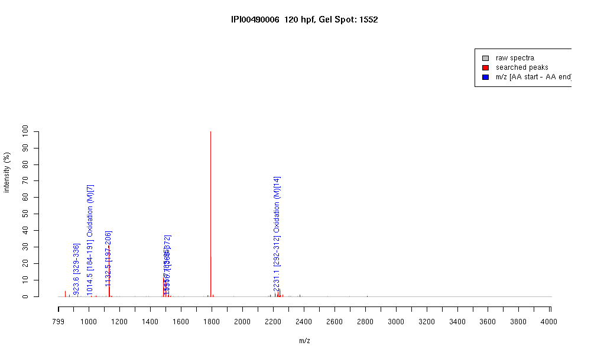

| Name | "Actin, cytoplasmic 2" |
|---|---|
| MW | 41654.7 |
| PI | 5.3 |
| Mascot Protein Score | 65 |
| Masses (matched / unmatched) | 6 / 35 |

| Peptide | MZ (calc) | MZ (observed) | Error (DA) | Error (PPM) | Start | Stop | Modifications |
|---|---|---|---|---|---|---|---|
| IIAPPERK | 923.5672 | 923.575 | 0.0078 | 8 | 329 | 336 | |
| DLTDYLMK | 1014.4812 | 1014.4794 | -0.0018 | -2 | 184 | 191 | Oxidation (M)[7] |
| GYSFTTTAER | 1132.527 | 1132.5345 | 0.0075 | 7 | 197 | 206 | |
| IWHHTFYNELR | 1515.7491 | 1515.6774 | -0.0717 | -47 | 85 | 95 | |
| QEYDESGPSIVHR | 1516.7026 | 1516.6978 | -0.0048 | -3 | 360 | 372 | |
| DLYANTVLSGGTTMYPGIADR | 2231.0649 | 2231.0698 | 0.0049 | 2 | 292 | 312 | Oxidation (M)[14] |